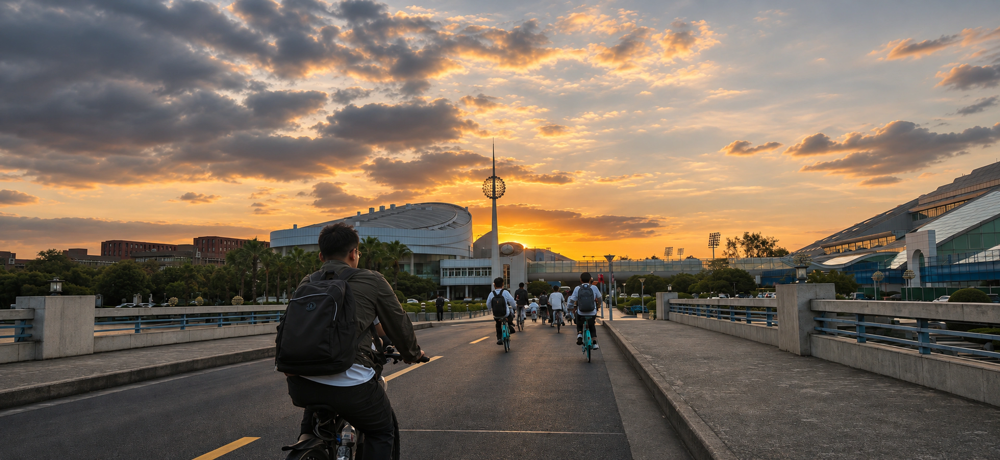

01 / 09 — 校园摄影 · AI 调整版
展览前言
我在浙大拍到的光
我出去玩的时候喜欢带相机，到处走走，看哪里光线好。刚来浙大，我也带着相机在学校里逛。有时候本来只是要去一个地方，半路看到光照得好，脚步就慢下来了。
刚进大学，去哪儿、要做什么，很多事都还没想好。我先从走过的路拍起，慢慢拍到一起赶路的人、湖上的桨板，还有一张空长椅。回头翻这些照片，才发现自己已经在这座校园里走过了不少地方。
参评主题 · 启航求是新程，谱写青春之声
光影拾遗
还有四张，我也想留在这里。
从快门到作品
创作构思
我把过桥放在第一张。一路看到有人同行、有人从岸边划出去，也有可以坐一会儿的地方。最后回到宿舍走廊，我想试着把那点日常里的光做成一张作品。修图时，我希望暗部也能看清楚，夕阳的暖色还在。两版照片都留在这里，可以看看同一个地方原本的样子，也看看我最后选了怎样的光。
创作记录与 AI 使用说明 ＋
- 使用工具
- ChatGPT。
- 使用场景
- 在原片基础上尝试不同的光影和色彩、调整局部元素，并辅助整理展览文案和制作网页。
- 生成内容
- 每张展示图均使用 AI 调整，网页中可查看对应原片。网页在作者指导下由 AI 辅助生成。
- 作者参与
- 九张原片由我拍摄。我负责取景、构图、选片和主题构思，也提供了修图参考，逐轮确认光影和色调的调整方向。网页怎么排、照片先展示哪个版本、解读从什么角度写，都是我提出的要求，由 AI 辅助实现。
- 图片尺寸
- 调整版下载文件通过插值放大至长边 3840 像素。原片保留上传尺寸。
浙江大学 · 素养课程传播实践 / 启航求是新程，谱写青春之声